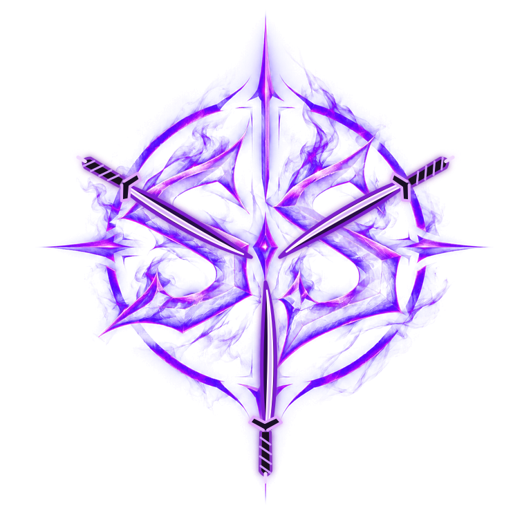

Start with permission.
Keep learning and testing inside an authorized lab, CTF, or explicitly approved scope.

SILENT SHADOWSecurity research. Ethical hacking.
Building systems that understand risk.
I’m Alwinjo, also known as Silent Shadow — a cybersecurity student exploring ethical hacking, security research, digital forensics, and practical security tools. I’m interested in understanding how systems fail, how defenses work, and how to communicate risk clearly.
Areas I’m exploring through study, project ideas, and responsible practice.
Independent study & lab practice
ONGOINGTurning questions into small, documented project ideas
ONGOINGCTF concepts, security tools, and research notes
ONGOINGKeep learning and testing inside an authorized lab, CTF, or explicitly approved scope.
Break a question into small checks, record what was actually observed, and separate evidence from assumptions.
Document the environment, steps, limitations, and lessons so the work can be reviewed and reproduced.
Full form shown in your supplied design: Security Hub for Analysis, Detection, Observation & WarfareTranscribed from the visual reference; project documentation was not available to verify it.
Your supplied design presents S.H.A.D.O.W. as a modular security toolkit for analysis, detection, monitoring, and response. This section expands that concept while marking its implementation details as unverified.
Conceptual direction only. The original repository and project documentation were not present in the workspace, so no modules or implementation claims can be verified yet.
Explore a proposed architecture for S.H.A.D.O.W. Select a node for context. Nodes describe a design concept, not confirmed software components.
A proposed visitor-facing or operator-facing layer for configuration, status, and review.
Your supplied design describes a modular security toolkit for analysis, detection, monitoring, and response. Its purpose and implementation still need confirmation against project documentation.
The reference mockup labels S.H.A.D.O.W. “Implemented,” but source code was not available. This portfolio therefore marks the current implementation status unverified.
No project has been verified in this category yet.
Research begins with a question. These are editable field-note templates, ready for verified write-ups.
These are learning areas, tools, and technologies named in your brief. They describe interests and exposure, not proficiency claims or certifications.
Study areas for understanding how systems are attacked, defended, and reviewed.
Tools listed as part of the current learning toolkit.
Languages and frameworks named in your brief.
Ways to structure learning and communicate technical work.
Keep authorization, environment, observations, and limitations visible in every write-up.
● Portfolio terminal ready. This is a simulated interface, not a shell.
Type help to see available commands.
ALWINJO // SILENT SHADOW
Curious about a project, a CTF idea, or responsible security research? Reach out.
silentshadow301b@gmail.com